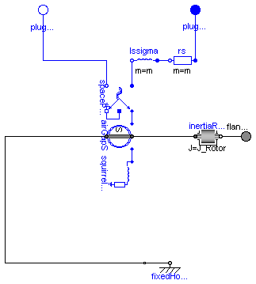
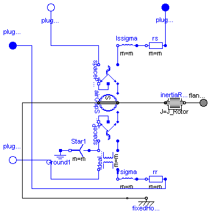

This package contains models of asynchronous induction machines, based on space phasor theory:
| Name | Description |
|---|---|
| Asynchronous induction machine with squirrel cage rotor | |
| AIM_SlipRing | Asynchronous induction machine with slipring rotor |

Model of a three phase asynchronous induction machine with squirrel cage.
Resistance and stray inductance of stator is modeled directly in stator phases, then using space phasor transformation. Resistance and stray inductance of rotor's squirrel cage is modeled in two axis of the rotor-fixed ccordinate system. Both together connected via a stator-fixed AirGap model. Only losses in stator and rotor resistance are taken into account.
Default values for machine's parameters (a realistic example) are:
| number of pole pairs p | 2 | |
| stator's moment of inertia | 0.29 | kg.m2 |
| rotor's moment of inertia | 0.29 | kg.m2 |
| nominal frequency fNominal | 50 | Hz |
| nominal voltage per phase | 100 | V RMS |
| nominal current per phase | 100 | A RMS |
| nominal torque | 161.4 | Nm |
| nominal speed | 1440.45 | rpm |
| nominal mechanical output | 24.346 | kW |
| efficiency | 92.7 | % |
| power factor | 0.875 | |
| stator resistance | 0.03 | Ohm per phase in warm condition |
| rotor resistance | 0.04 | Ohm in warm condition |
| stator reactance Xs | 3 | Ohm per phase |
| rotor reactance Xr | 3 | Ohm |
| total stray coefficient sigma | 0.0667 | |
| These values give the following inductances, assuming equal stator and rotor stray inductances: |
||
| stator stray inductance per phase | Xs * (1 - sqrt(1-sigma))/(2*pi*fNominal) | |
| rotor stray inductance | Xr * (1 - sqrt(1-sigma))/(2*pi*fNominal) | |
| main field inductance per phase | sqrt(Xs*Xr * (1-sigma))/(2*pi*fNominal) |
| Type | Name | Default | Description |
|---|---|---|---|
| J_Rotor | 0.29 | rotor's moment of inertia [kg.m2] | |
| p | 2 | number of pole pairs (Integer) | |
| Nominal resistances and inductances | |||
| Rs | 0.03 | warm stator resistance per phase [Ohm] | |
| Lssigma | 3*(1 - sqrt(1 - 0.0667))/(2*... | stator stray inductance per phase [H] | |
| Lm | 3*sqrt(1 - 0.0667)/(2*pi*fNo... | main field inductance [H] | |
| Lrsigma | 3*(1 - sqrt(1 - 0.0667))/(2*... | rotor stray inductance [H] | |
| Rr | 0.04 | warm rotor resistance [Ohm] | |
| Type | Name | Description |
|---|---|---|
| flange_a | ||
| plug_sp | ||
| plug_sn |
model AIM_SquirrelCage
"Asynchronous induction machine with squirrel cage rotor"
extends Machines.Interfaces.PartialBasicInductionMachine;
constant Modelica.SIunits.Frequency fNominal=50 "nominal frequency";
parameter Modelica.SIunits.Resistance Rs=0.03
"|Nominal resistances and inductances|warm stator resistance per phase";
parameter Modelica.SIunits.Inductance Lssigma=3*(1 - sqrt(1 - 0.0667))/(2*pi*
fNominal)
"|Nominal resistances and inductances|stator stray inductance per phase";
parameter Modelica.SIunits.Inductance Lm=3*sqrt(1 - 0.0667)/(2*pi*fNominal)
"|Nominal resistances and inductances|main field inductance";
parameter Modelica.SIunits.Inductance Lrsigma=3*(1 - sqrt(1 - 0.0667))/(2*pi*
fNominal) "|Nominal resistances and inductances|rotor stray inductance";
parameter Modelica.SIunits.Resistance Rr=0.04
"|Nominal resistances and inductances|warm rotor resistance";
output Modelica.SIunits.Current i_0_s( stateSelect=StateSelect.prefer) = spacePhasorS.zero.i
"stator zero-sequence current";
output Modelica.SIunits.Current idq_ss[2] = airGapS.i_ss
"stator space phasor current / stator fixed frame";
output Modelica.SIunits.Current idq_sr[2](each stateSelect=StateSelect.prefer) = airGapS.i_sr
"stator space phasor current / rotor fixed frame";
output Modelica.SIunits.Current idq_rs[2] = airGapS.i_rs
"rotor space phasor current / stator fixed frame";
output Modelica.SIunits.Current idq_rr[2](each stateSelect=StateSelect.prefer) = airGapS.i_rr
"rotor space phasor current / rotor fixed frame";
Modelica.Electrical.MultiPhase.Basic.Resistor rs(final m=m, final R=fill(Rs, m));
Modelica.Electrical.MultiPhase.Basic.Inductor lssigma(final m=m, final L=fill(Lssigma, m));
Machines.SpacePhasors.Components.SpacePhasor spacePhasorS;
Machines.BasicMachines.Components.AirGapS airGapS(final p=p, final Lm=Lm);
Machines.BasicMachines.Components.SquirrelCage squirrelCageR(final Lrsigma=
Lrsigma, final Rr=Rr);
equation
connect(rs.plug_n, lssigma.plug_p);
connect(lssigma.plug_n, spacePhasorS.plug_p);
connect(spacePhasorS.plug_n, plug_sn);
connect(rs.plug_p, plug_sp);
connect(spacePhasorS.ground, spacePhasorS.zero);
connect(spacePhasorS.spacePhasor, airGapS.spacePhasor_s);
connect(airGapS.spacePhasor_r, squirrelCageR.spacePhasor_r);
connect(airGapS.flange_a, inertiaRotor.flange_a);
connect(airGapS.support, internalSupport);
end AIM_SquirrelCage;

Model of a three phase asynchronous induction machine with slipring rotor.
Resistance and stray inductance of stator and rotor are modeled directly in stator respectively rotor phases, then using space phasor transformation and a stator-fixed AirGap model. Only losses in stator and rotor resistance are taken into account.
Default values for machine's parameters (a realistic example) are:
| number of pole pairs p | 2 | |
| stator's moment of inertia | 0.29 | kg.m2 |
| rotor's moment of inertia | 0.29 | kg.m2 |
| nominal frequency fNominal | 50 | Hz |
| nominal voltage per phase | 100 | V RMS |
| nominal current per phase | 100 | A RMS |
| nominal torque | 161.4 | Nm |
| nominal speed | 1440.45 | rpm |
| nominal mechanical output | 24.346 | kW |
| efficiency | 92.7 | % |
| power factor | 0.875 | |
| stator resistance | 0.03 | Ohm per phase in warm condition |
| rotor resistance | 0.04 | Ohm per phase in warm condition |
| stator reactance Xs | 3 | Ohm per phase |
| rotor reactance Xr | 3 | Ohm per phase |
| total stray coefficient sigma | 0.0667 | |
| TurnsRatio | 1 | effective ratio of stator and rotor current (ws*xis) / (wr*xir) |
| These values give the following inductances: | ||
| stator stray inductance per phase | Xs * (1 - sqrt(1-sigma))/(2*pi*fNominal) | |
| rotor stray inductance | Xr * (1 - sqrt(1-sigma))/(2*pi*fNominal) | |
| main field inductance per phase | sqrt(Xs*Xr * (1-sigma))/(2*pi*f) |
Parameter TurnsRatio could be obtained from the following relationship
at standstill with open rotor circuit at nominal voltage and nominal frequency,
using the locked-rotor voltage VR, no-load stator current I0 and powerfactor PF0:
TurnsRatio * VR = Vs - (Rs + j Xs,sigma) I0
| Type | Name | Default | Description |
|---|---|---|---|
| J_Rotor | 0.29 | rotor's moment of inertia [kg.m2] | |
| p | 2 | number of pole pairs (Integer) | |
| useTurnsRatio | true | use TurnsRatio or calculate from locked-rotor voltage? | |
| TurnsRatio | 1 | (ws*xis) / (wr*xir) | |
| VsNom | 100 | Nominal stator voltage per phase [V] | |
| Vr_LR | 100*(2*pi*fNominal*Lm)/sqrt(... | Locked-rotor voltage per phase [V] | |
| Nominal resistances and inductances | |||
| Rs | 0.03 | warm stator resistance per phase [Ohm] | |
| Lssigma | 3*(1 - sqrt(1 - 0.0667))/(2*... | stator stray inductance per phase [H] | |
| Lm | 3*sqrt(1 - 0.0667)/(2*pi*fNo... | main field inductance [H] | |
| Lrsigma | 3*(1 - sqrt(1 - 0.0667))/(2*... | rotor stray inductance per phase [H] | |
| Rr | 0.04 | warm rotor resistance per phase [Ohm] | |
| Type | Name | Description |
|---|---|---|
| flange_a | ||
| plug_sp | ||
| plug_sn | ||
| plug_rp | ||
| plug_rn |
model AIM_SlipRing
"Asynchronous induction machine with slipring rotor"
extends Interfaces.PartialBasicInductionMachine;
constant Modelica.SIunits.Frequency fNominal=50 "nominal frequency";
parameter Modelica.SIunits.Resistance Rs=0.03
"|Nominal resistances and inductances|warm stator resistance per phase";
parameter Modelica.SIunits.Inductance Lssigma=3*(1 - sqrt(1 - 0.0667))/(2*pi*
fNominal)
"|Nominal resistances and inductances|stator stray inductance per phase";
parameter Modelica.SIunits.Inductance Lm=3*sqrt(1 - 0.0667)/(2*pi*fNominal)
"|Nominal resistances and inductances|main field inductance";
parameter Modelica.SIunits.Inductance Lrsigma=3*(1 - sqrt(1 - 0.0667))/(2*pi*
fNominal)
"|Nominal resistances and inductances|rotor stray inductance per phase";
parameter Modelica.SIunits.Resistance Rr=0.04
"|Nominal resistances and inductances|warm rotor resistance per phase";
parameter Boolean useTurnsRatio=true
"use TurnsRatio or calculate from locked-rotor voltage?";
parameter Real TurnsRatio(final min=Modelica.Constants.small)=1
"(ws*xis) / (wr*xir)";
parameter Modelica.SIunits.Voltage VsNom=100
"Nominal stator voltage per phase";
parameter Modelica.SIunits.Voltage Vr_LR=100*
(2*pi*fNominal*Lm)/sqrt(Rs^2+(2*pi*fNominal*(Lm+Lssigma))^2)
"Locked-rotor voltage per phase";
output Modelica.SIunits.Current i_0_s( stateSelect=StateSelect.prefer) = spacePhasorS.zero.i
"stator zero-sequence current";
output Modelica.SIunits.Current idq_ss[2] = airGapS.i_ss
"stator space phasor current / stator fixed frame";
output Modelica.SIunits.Current idq_sr[2](each stateSelect=StateSelect.prefer) = airGapS.i_sr
"stator space phasor current / rotor fixed frame";
output Modelica.SIunits.Current idq_rs[2] = airGapS.i_rs
"rotor space phasor current / stator fixed frame";
output Modelica.SIunits.Current idq_rr[2](each stateSelect=StateSelect.prefer) = airGapS.i_rr
"rotor space phasor current / rotor fixed frame";
output Modelica.SIunits.Current i_0_r = spacePhasorR.zero.i
"rotor zero-sequence current";
output Modelica.SIunits.Voltage vr[m] = plug_rp.pin.v - plug_rn.pin.v
"rotor instantaneous voltages";
output Modelica.SIunits.Current ir[m] = plug_rp.pin.i
"rotor instantaneous currents";
protected
parameter Real internalTurnsRatio=if useTurnsRatio then TurnsRatio else
VsNom/Vr_LR*(2*pi*fNominal*Lm)/sqrt(Rs^2+(2*pi*fNominal*(Lm+Lssigma))^2);
public
Modelica.Electrical.MultiPhase.Basic.Resistor rs(final m=m, final R=fill(Rs, m));
Modelica.Electrical.MultiPhase.Basic.Inductor lssigma(final m=m, final L=fill(Lssigma, m));
Machines.SpacePhasors.Components.SpacePhasor spacePhasorS;
Machines.BasicMachines.Components.AirGapS airGapS(final p=p, final Lm=Lm);
Machines.SpacePhasors.Components.SpacePhasor spacePhasorR;
Modelica.Electrical.MultiPhase.Ideal.IdealTransformer IdealTransformer1(final m=m, final n=
fill(1/internalTurnsRatio, m));
Modelica.Electrical.MultiPhase.Basic.Star Star1(final m=m);
Modelica.Electrical.Analog.Basic.Ground Ground1;
Modelica.Electrical.MultiPhase.Basic.Inductor lrsigma(final m=m, final L=fill(Lrsigma, m));
Modelica.Electrical.MultiPhase.Basic.Resistor rr(final m=m, final R=fill(Rr, m));
Modelica.Electrical.MultiPhase.Interfaces.PositivePlug plug_rp(final m=m);
Modelica.Electrical.MultiPhase.Interfaces.NegativePlug plug_rn(final m=m);
equation
connect(rs.plug_n, lssigma.plug_p);
connect(lssigma.plug_n, spacePhasorS.plug_p);
connect(rr.plug_n, lrsigma.plug_p);
connect(spacePhasorR.plug_n, IdealTransformer1.plug_n2);
connect(spacePhasorR.plug_p, IdealTransformer1.plug_p2);
connect(IdealTransformer1.plug_p1, lrsigma.plug_n);
connect(Star1.pin_n, Ground1.p);
connect(Star1.plug_p, IdealTransformer1.plug_n2);
connect(IdealTransformer1.plug_n1, plug_rn);
connect(rr.plug_p, plug_rp);
connect(rs.plug_p, plug_sp);
connect(plug_sn, spacePhasorS.plug_n);
connect(spacePhasorS.ground, spacePhasorS.zero);
connect(spacePhasorR.ground, spacePhasorR.zero);
connect(spacePhasorS.spacePhasor, airGapS.spacePhasor_s);
connect(airGapS.spacePhasor_r, spacePhasorR.spacePhasor);
connect(airGapS.flange_a, inertiaRotor.flange_a);
connect(airGapS.support, internalSupport);
end AIM_SlipRing;